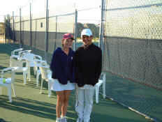
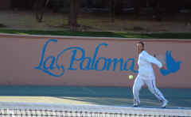
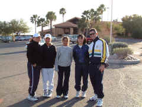

DVD Review Archive
Feature Archive Back Issues Links DVD MIA DVD
Alerts Movie Posters Laser Site Info Home E-mail
© 2002 Films on Disc Stuart J. Kobak ALL RIGHTS RESERVED.
|
|
|
Arizona Continued
|
|||
|
Before dinner at The Hacienda Del Sol, Liz and Dorothy huddle up against the chill air. The restaurant garden entry is a charming desert landscape, with a little bit of extra twinkle for the season. Stu was actually elated by an Oregon Pinot Noir, Archery Summit Estate. Very much like a good Burgundy. The same estate's "Arcus" vineyard turned out to be a miserable choice. One out of two is not bad and they had a delicious Louis Roederer champagne by the glass, thank you.  Liz is all smiles with her friend Samantha Orlin, after winning her second match of the day at the National 14s. Liz beat Sara Lett of Indianapolis, 6-3, 6-1 in the round of 64. Tomorrow is a taller task in 5th seed Alessandra Jordan of Texas.
|
 Liz warms up at the La Paloma Country Club for her first round match against Jennifer Ryba of New Jersey. Liz prevailed 6-3, 3-6, 6-0. Early morning temperatures in the low thirties warmed under the bright Arizona sun and the sweaters were off by the matches end. La Paloma is a lovely spot. The swimming pools are adorned by stone waterfalls and the mountain backdrops are most dramatic.
 The El Conquistador Country Club is one of the sites for the National 14s. Liz and Dorothy are smiling with Alicia Menezes, center and her coaches Mayuko and Ed Perpetua |
||